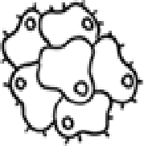

YAA - Chương 3 (6)
5
Hãy hấp thụ nó
Rất, rất, rất lâu trước đây, các sinh vật đơn bào nhỏ bé đã xuất hiện trên Trái đất. Ví dụ như là amip. Nó trông như thế này:
Và rồi điều gì đã xảy ra? À, 300 triệu năm sau những sinh vật đơn bào ấy tiến hóa thành những sinh vật đa bào. Như thế này:

Rồi sau đó chuyện gì đã xảy ra? À, 300 triệu năm sau đó nữa, những sinh vật đa bào ấy tiến hóa thành cây cỏ và muông thú. Chẳng hạn như là chúng ta!
Và bạn biết có điểm gì thú vị ở đây không?
Các sinh vật đơn bào không bao giờ biến mất. Chúng không hề tuyệt chủng. Chúng không bị lỗi thời. Cây cối, động vật, và chính cơ thể của chúng ta cũng có tới hàng trăm triệu cơ quan đơn bào sống trên người và bên trong chúng ta. Cơ thể của chúng ta chính là nhà của chúng.
Thế còn những sinh vật đa bào thì sao?
À, điều quan trọng là, chúng được hình thành nên từ những cơ quan đơn bào. Và, cũng quan trọng không kém, chúng không hề biến mất mà chúng trở thành một phần của những cái toàn thể mới hơn, vĩ đại hơn. Có những cơ quan đa bào trong cây cối. Trong bạn. Trong tôi. Trong cô Oprah[1].
Ý của tôi ở đây là gì?
Chúng ta thường nghĩ về sự tiến hóa như là “tàn phá và thay thế” quá khứ nhưng thật ra nó lại là “vượt lên và bao gồm.”
Quá khứ được hấp thụ để tạo ra tương lai.
Tác giả Ken Wilber đã đưa ý tưởng này vào một số cuốn sách của ông, chẳng hạn như A Brief History of Everything[2]. Thành thị không hề xóa sổ các trang trại mà thay vì thế đã hợp nhất việc canh tác theo một cách hiệu quả và năng suất hơn. Điện ảnh không hề thay thế nhiếp ảnh. Trip-hop[3] không hề thay thế hip-hop[4]. Chúng ta không hề thay thế lũ khỉ đột. Tư duy lý trí tiến hóa của chúng ta không hề thay thế cảm xúc, mà thực ra nó đã hấp thụ những cảm xúc đó vào trong bộ não lý trí mới tiến hóa của chúng ta.
Sự phát triển thực thụ, sự tiến hóa thực thụ, không đến từ sự hủy diệt. Nó đến từ việc giữ lấy những gì có trước đó và hợp nhất chúng vào một tổng thể vĩ đại hơn. Điều gì đến từ những thư viện bị cháy rụi? Những đống tro tàn. Và điều gì đến từ việc đọc các cuốn sách và phát triển tư duy của riêng bạn? Khá là nhiều những ý tưởng tuyệt vời. Điều gì đến từ những thị trấn bị san bằng? Những đống tro tàn. Và điều gì đến từ việc nghiên cứu công nghệ của các quốc gia khác và sao chép nó và học hỏi từ nó? Trung Quốc. Không, tôi đùa đấy. Ý tôi là tất cả các công nghệ trong tương lai.
Sẽ không có dịch vụ gọi xe thông qua các ứng dụng nếu GPS không xuất hiện.
Sẽ không có Siri[5] nếu không có công cụ tìm kiếm trước đó.
Sẽ không có bạn của ngày hôm nay nếu thiếu đi mọi điều trong quá khứ của bạn. Cũng như, sẽ không có bạn của ngày mai nếu thiếu đi mọi việc mà hiện tại bạn đang trải qua.
Nếu như người vợ đầu không hết yêu tôi, tôi sẽ không chuyển tới một căn hộ dành cho người độc thân ở khu The Hudson. Tôi sẽ không bao giờ gặp một cô gái sống ở cuối hành lang có tên là Rita. Tôi sẽ không bao giờ phải lòng người bạn Leslie của cô ấy. Tôi sẽ không bao giờ chuyển tới sống chung với Leslie vào một năm sau đó và tôi sẽ không bao giờ cầu hôn nàng sau đấy một năm.
Tôi sẽ không bao giờ có thể kết hôn với nàng.
Và tôi sẽ không bao giờ có với nàng một cậu con trai tên… Hudson.
Tôi không biết hết những điều này vào thời điểm đó, nhưng tôi đã hấp thu quá khứ, và nó đã tạo ra tương lai của tôi.
Và điều ấy không chỉ xảy ra với mỗi mình tôi thôi đâu.
Nó xảy ra với tất cả chúng ta.
Nó xảy ra với bạn.
Nó xảy ra với tôi.
Nó xảy ra với chúng ta.
Khi bạn vấp ngã, bạn có thể thêm vào một dấu ba chấm để tiếp tục tiến bước, rồi sau đó hãy dịch chuyển ánh đèn sân khấu để bạn không buộc tội bản thân, và rồi cuối cùng, cuối cùng, cuối cùng hãy cố gắng Xem nó như là một bậc thang.
[1] Chỉ Oprah Winfrey
[2] Tạm dịch: Lược Sử Của Vạn Vật. Kenneth Earl Wilber II (sinh ngày 31/1/1949) là một nhà triết học và nhà tâm lý học chuyển vị người Mỹ với lý thuyết triết học Dung hợp của riêng ông, một triết lý có hệ thống gợi ý sự tổng hợp tất cả kiến thức và kinh nghiệm của con người vào cùng một hệ thống. Đọc thêm: https://www.tugiac.vn/blog/gioi-thieu-ve-triet-gia-ken-wilber
[3] trip-hop: một loại nhạc khiêu vũ, phát triển trên nền nhạc hip-hop của những năm 90.
[4] Nhạc hip hop, bao gồm cả nhạc rap, là một thể loại âm nhạc và trào lưu văn hóa xuất hiện từ thập niên 1970 tại quận Bronx, New York. Nền văn hóa này xuất thân và phát triển ở những khu ghetto (thường là những nơi ở tập trung của những người nghèo, người da màu, nơi thường gắn liền với nhiều tệ nạn xã hội và băng đảng).
[5] Siri là một trợ lý cá nhân thông minh, là một phần của hệ điều hành iOS, iPadOS, watchOS, macOS, và tvOS của Apple Inc. Trợ lý dùng giọng nói và giao diện người dùng có ngôn ngữ tự nhiên để trả lời các câu hỏi, đưa ra các khuyến nghị và thực hiện hành động bằng cách chuyển các yêu cầu cho một bộ các dịch vụ Internet. Phần mềm này sẽ thích nghi với cách sử dụng ngôn ngữ, cách tìm kiếm và sở thích cá nhân của người dùng khi sử dụng. Kết quả trả lại được cá nhân hóa. Nguồn: Wikipedia
Comments